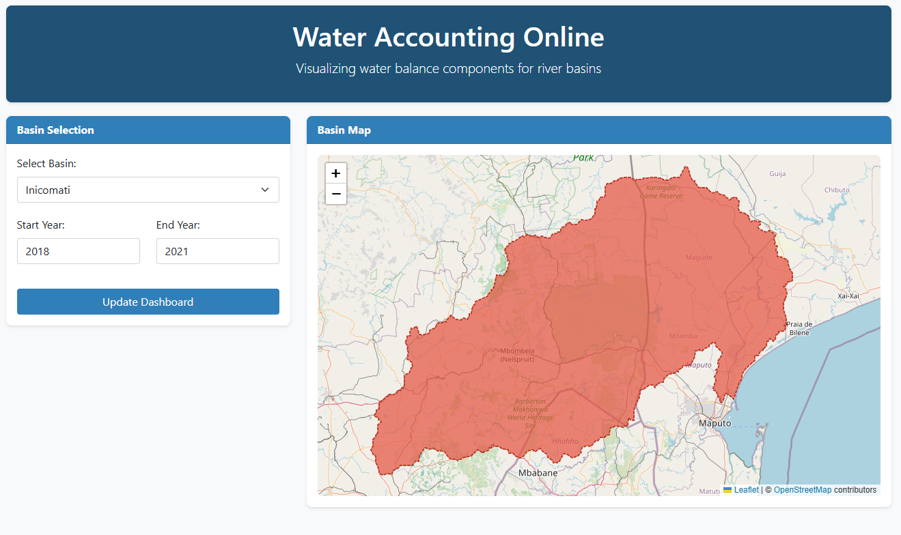
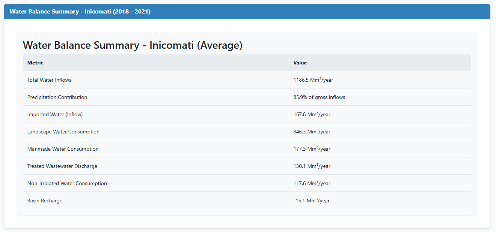
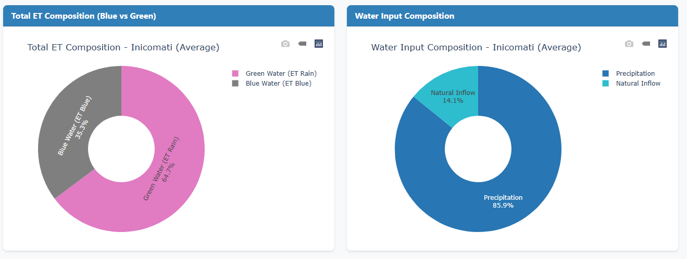
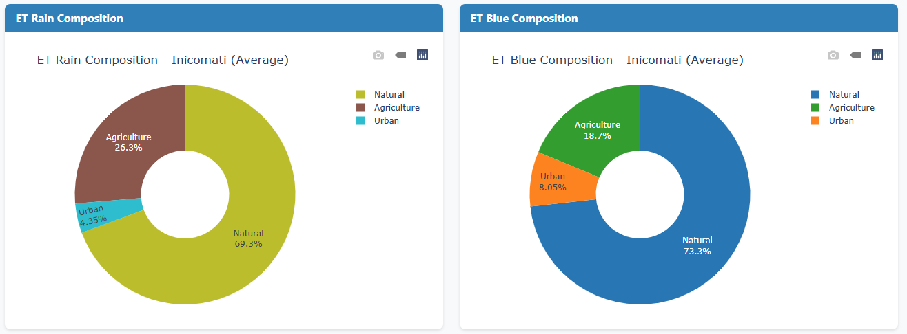
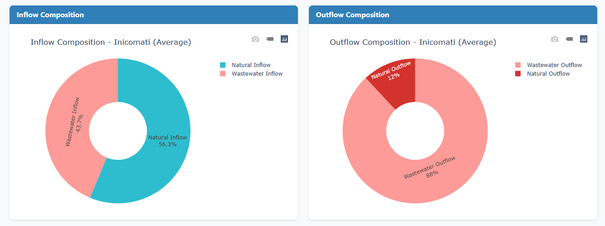
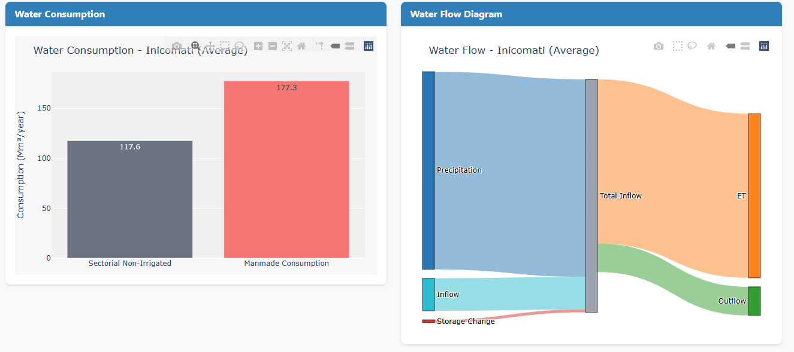

Dashboard Overview
An interactive web application designed for real-time visualization and analysis of water balance components across river basins, enabling quick decision-making for water resource management.

Core Functionality
- Dynamic basin selection and time period filtering
- Interactive water balance visualization with drill-down capability
- Real-time ET (Evapotranspiration) composition analysis
- Multi-year comparative analysis tools
- Responsive design for desktop and mobile access
Technical Implementation
- Backend: Python with Flask framework
- Frontend: JavaScript with Plotly/D3.js for visualizations
- Data Processing: Pandas/NumPy for water balance calculations
- Deployment: Docker containerization
- Version Control: Git with GitHub repository
Dashboard Interface





